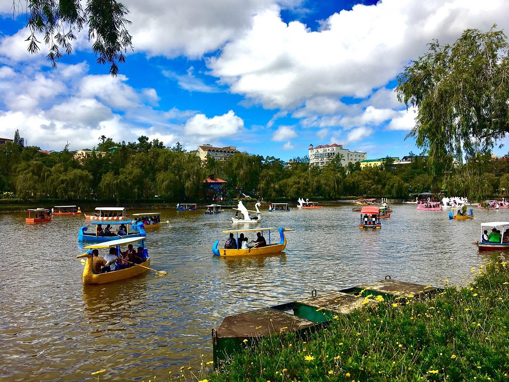
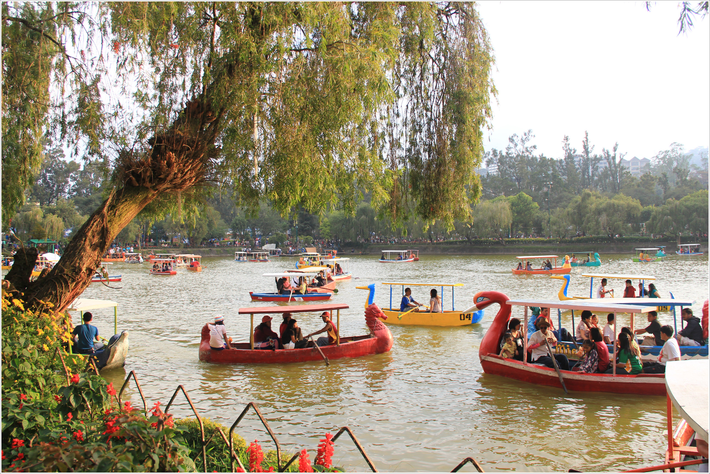
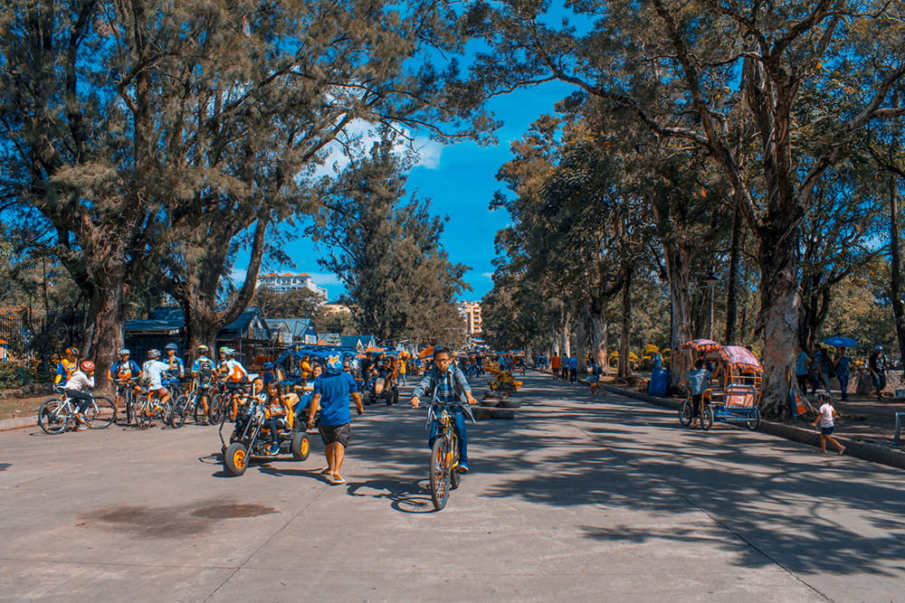

One of the most famous parks in Baguio City.



Burnham Park is the heart of Baguio City and one of its most iconic attractions. Named after American architect Daniel Burnham, the park offers scenic landscapes, a man-made lake for boating, biking areas, flower gardens, and relaxing picnic spaces. Its cool atmosphere and lively surroundings make it a favorite destination for both locals and tourists seeking leisure and recreation.